Conversion of Satellite Images to Google Maps Using GAN
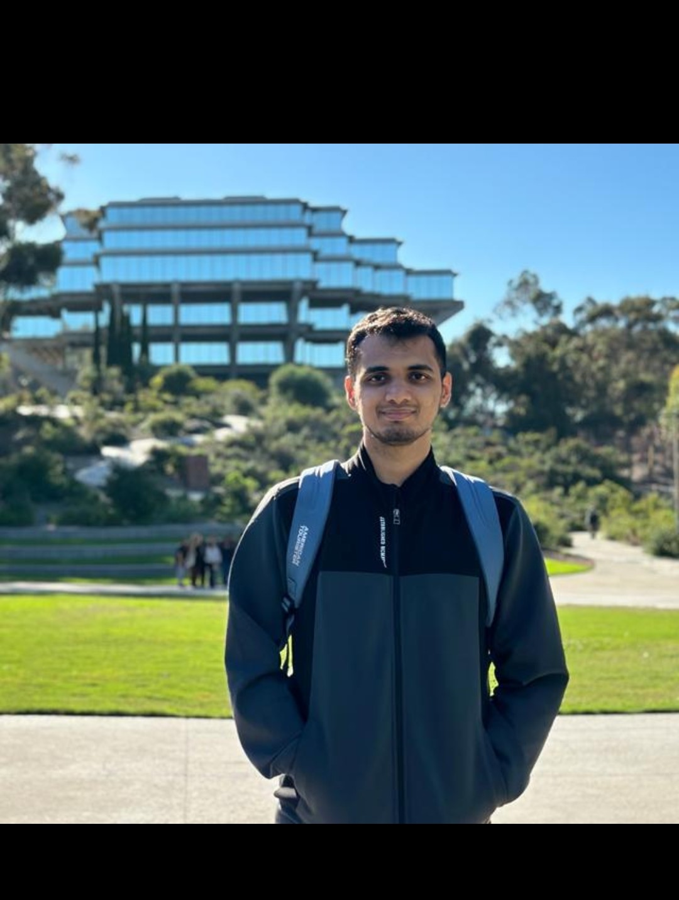
Welcome to my Research Project site.
Home
Welcome to my Research Project portfolio website.
About Me
My name is Ninad Ekbote, and I am currently pursuing my MS in Machine Learning and Data Science at UC San Diego.
As a deep learning enthusiast, I enjoy experimenting with various DL models. I am excited to share and discuss my
research project based on Cycle GANs on this site.
Looking forward to engaging in insightful discussions!
Intro to Cycle Gan
In the realm of image processing, there's a common challenge: how do you teach a computer to transform images from
one style to another when you don't have pairs of images showing the same scene in both styles? This problem is tackled by CycleGan.
CycleGAN doesn't need paired images to learn how to translate between styles. Instead, it uses two main tricks.
First, it employs a pair of "adversarial" networks, where one network tries to generate convincing images in the new style,
while another tries to distinguish those fake images from real ones. This helps ensure the translated images look authentic.
Using these techniques, CycleGAN has proven effective in various tasks like changing artistic styles, morphing objects, altering seasons in images, and enhancing photos.
It's a powerful tool in cases where getting pairs of images for training is impractical or impossible.
Problem Definition
The project sets out to introduce a fresh iteration of CycleGAN, dubbed CycleGAN(W-net),
and evaluate its efficacy compared to the original CycleGAN in the context of transforming satellite or aerial images
into interpretable maps akin to those found in Google Maps. This comparative analysis is motivated by CycleGAN's limitations,
particularly its struggles with low-contrast images.
By focusing on satellite imagery, the study aims to underscore how CycleGAN(W-net) overcomes this challenge.
Using a unified dataset, the experiment devises three subsets to gauge the models' performance across distinct image features:
roads (Subset A), forests (Subset B), and bodies of water (Subset C).
Both CycleGAN and CycleGAN(W-net) undergo training on 256x256x3 dimensional satellite images to produce corresponding 256x256x3 maps.
Through empirical investigation, it's evident that CycleGAN faces difficulties when handling low-contrast images.
Consequently, CycleGAN(W-net) is proposed as a solution tailored to excel in such scenarios, showcasing enhanced performance in accurately
translating these images. This project aims to shed light on the comparative strengths and weaknesses of both models,
particularly in managing the diverse features present in satellite imagery.
Dataset
The project utilizes the TensorFlow dataset, which encompasses the TensorFlow image classification datasets,
including those tailored for CycleGAN. Specifically, the maps dataset is employed for both training and testing purposes.
The dataset comprises 1096 original images and 1096 corresponding label images for training, as well as 1098 original images and 1098
label images for testing.
To facilitate further evaluation, the testing dataset is segmented into three subsets: Subset A, Subset B, and Subset C. Subset A comprises 200 road images sourced from the original test dataset,
paired with their corresponding labeled images. Subset B encompasses 50 images of forests from the original test dataset, alongside their labeled counterparts.
Subset C includes 50 water images, also sourced from the original test dataset, accompanied by their labeled versions.
All images across the dataset, including subsets, adhere to a consistent size of 256x256x3 pixels. This standardized format ensures uniformity and compatibility throughout the training and evaluation processes.
Methodology
(1) Trained the Cycle-Gan and Pix2Pix models for converting satellite images to Google Maps images. In this step, Cycle Gan uses the U-net model as Generator. The project will use the same Generator model initially.
(2) Comparing the conversion of images both models provided and proved statistically that Pix2Pix is better at converting a satellite image to a Google Maps image.
(3) To improve the performance of Cycle Gan the Generator U-net model was replaced by the W-net model.
(4) This new Cycle Gan model after the replacement of the Generator model was trained to convert satellite images to Google Maps images.
(5) Later on, step 3 was repeated again in which we compared outputs from the original Cycle-Gan, Pix2Pix, and new Cycle-Gan. The outcome of this comparison is further discussed in the results section.
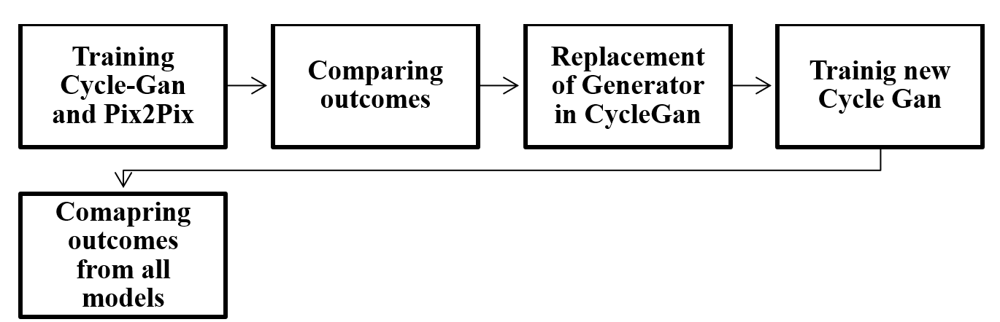
CycleGAN U-net
The GAN framework comprises two essential components: generator networks, denoted as G1 and G2.
G1 is dedicated to mapping images from domain X to domain Y (e.g., transforming satellite images into Google Maps),
denoted as G1(X → Y), while G2 handles the reverse mapping from domain Y to domain X, labeled as G2(Y → X)
(e.g., converting Google Maps back to satellite images). Both generators are trained using adversarial loss,
a technique that pits them against discriminator networks.
The training process involves two discriminators, termed D1 and D2. D1's role is to discern between the output images generated by
G1 and the actual images from domain Y, ensuring that the generated images resemble authentic samples from the target domain. Likewise,
D2 is tasked with distinguishing between the output images produced by G2 and the input images from domain X, aiming to enforce fidelity
to the original input data.
CycleGAN W-net
The CycleGAN model with W-net maintains most aspects of the original CycleGAN but
replaces the U-net architecture in the generator model. This adaptation increases computational demands but remains
feasible with existing open-source hardware. W-net addresses underfitting by adding layers and neurons, and regularization techniques are explored.
No changes are made to the discriminator network. Despite W-net's original design for unsupervised learning, adjustments are made to suit CycleGAN's
pseudo-unsupervised learning approach. Henceforth, this model is referred to as CycleGAN W-net.
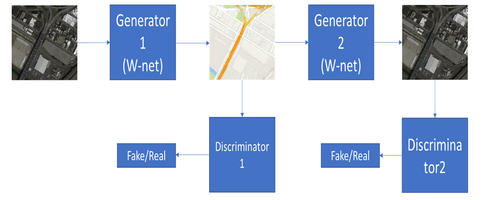
Metrices
We will use three Metrices for evaluation
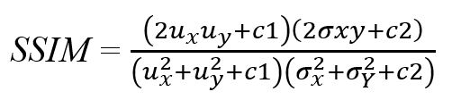
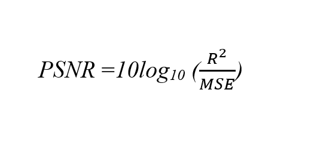
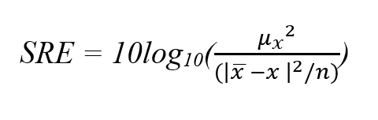
Analysis
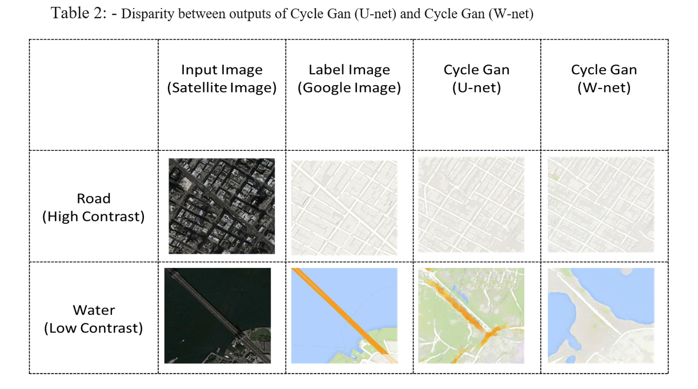
PSNR SCORES
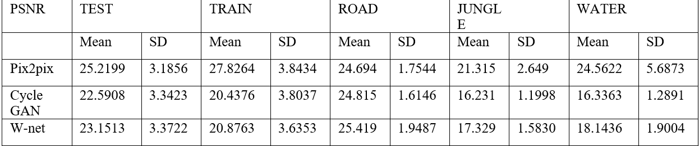
SRE SCORES
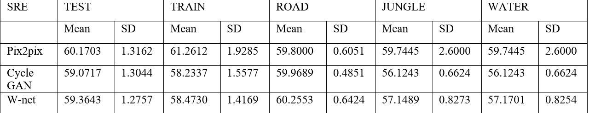
SSIM SCORES
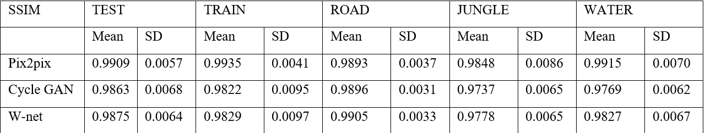
A/B testing with the help of Z testing
To conduct a two-sample Z-test, the following conditions must be satisfied:
We will use Z-testing to determine whether CycleGan(W-net) and original CycleGan are similar or not.
(1) Our sample size is greater than 30.
(2) Data points should be independent of each other. In other words, one data point isn’t related or doesn’t affect another data point.
(3) Our data should be normally distributed. However, for large sample sizes (over 30) this doesn’t always matter.
(4) Our data should be randomly selected from a population, where each item has an equal chance of being selected.
(5) Sample sizes should be equal if possible.
We set up a Hypothesis test. The Null Hypothesis (H0) posits that CycleGAN U-net and CycleGAN W-net produce equivalent outputs, suggesting the models are interchangeable. The Alternative Hypothesis (H1) suggests that the outputs are not equivalent, indicating performance differences. To test these hypotheses, our dataset is split into several subsets:
Train Dataset (1096 images)
Test Dataset (1098 images)
Road (200 images)
Jungle (50 images)
Water (50 images)
We use these subsets, especially the Water and Jungle datasets, to evaluate the image-to-image translation of both models.
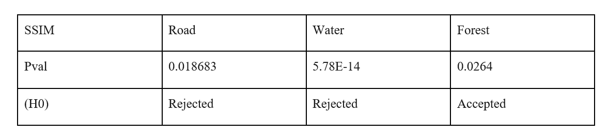
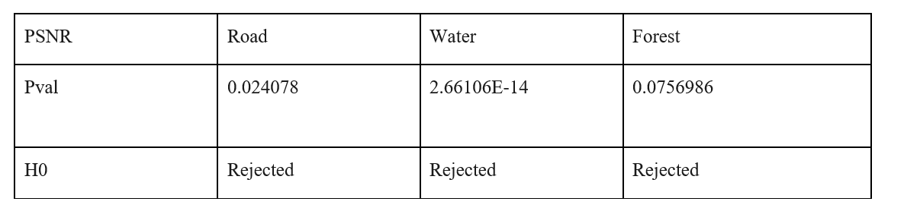
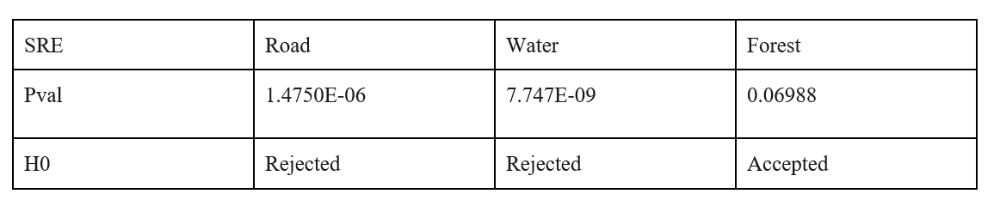
Conclusions from A/B Testing
These results showcase that the Null Hypothesis(H0) is rejected in the majority of cases. The significance of this finding is that the normal
distribution obtained from SSIM, SRE, and PSNR values (these values in turn obtained from the output of Cycle Gan (U-Net) Cycle Gan(W-net)) are
two separate distributions hence there is a disparity between the performances of these two Cycle Gan model. The mean values of SSIM, SRE, and
PSNR scores are greater in the case of Cycle Gan (W-net) than in Cycle Gan (U-net). This experimentation proves two things: (1) Through Z-testing
we establish that there is a disparity between Cycle Gan (U-net) and Cycle Gan (W-net). (2) Mean values obtained from Cycle Gan (W-net) are greater
than Cycle Gan (U-net) this proves that the outputs obtained from Cycle Gan W-net resemble the ideal output much better than Cycle Gan (U-net)
irrespective of whether the input image is a low contrast image or high contrast image.
Thank you for your Time
If you want full details of the project you can click on the link below